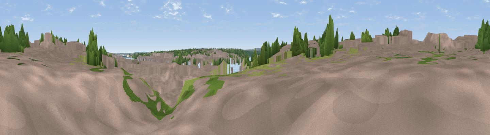

Segedunum Fort Viewing Tower
#45719 in England · top 97% of its area beats it · near WallsendWhere it is
The exact computed spot (NZ 30108 66074). Click the marker for map links.
The view, rendered

A 360° render of this exact spot computed from the terrain model, tree cover and land cover — summer colours, afternoon light, calibrated against photographs of famous viewpoints. Real trees, hedges and buildings will differ in detail.
The panorama
Grey silhouette: terrain skyline in each direction (720 bearings, Earth curvature and refraction included). Dashed green: skyline with trees (+15 m) and buildings (+8 m) as obstacles. Blue strip: how far the ground is visible on each bearing.
Where the view opens
Wedge length = distance to the farthest visible ground on that bearing (vegetation-aware). Rings at 10, 25 and 50 km.
What fills the view
59% built-up · 18% woodland · 15% water · 7% grassland
Angular shares of the visible panorama (visual magnitude), not map area. Landscape diversity 0.49 (0–1 Shannon).
Key numbers
More beautiful places nearby
The staircase of upgrades: each row has a higher view potential than everything closer. Driving times are estimates from straight-line distance, calibrated against real road routing — check an actual route before setting out.
| Place | Direction | Drive | Score |
|---|---|---|---|
| Viewpoint near Holystone | N · 3 km | ~7 min | 53.9 |
| Viewpoint near Gateshead | SW · 6 km | ~12 min | 60.7 |
| White Hill | SSW · 6 km | ~13 min | 69.8 |
| Viewpoint near Sunniside | SW · 11 km | ~21 min | 77.6 |
| Pontop Pike | SW · 20 km | ~34 min | 77.8 |
| Viewpoint near Rothbury | NW · 41 km | ~61 min | 81.1 |
| Dove Crag | NW · 42 km | ~61 min | 82.3 |
| Viewpoint near Glanton | NNW · 54 km | ~76 min | 82.9 |
54.98836, -1.53101 · source: osm viewpoint · position refined by local search. Computed location — check access rights before visiting.